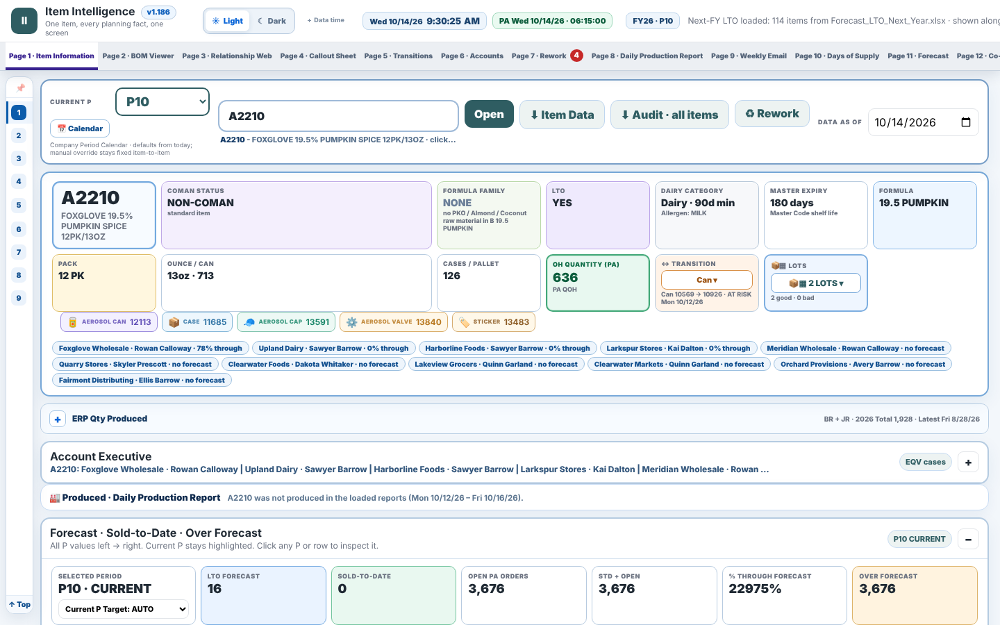

One item, every planning fact, one screen. Type an item code and the page shows its forecast, sold-to-date, on hand, open orders, bill of materials with material stock, lots and expiry, packaging transitions, where it sits on this week's and next week's schedule, and what was produced this week.

Open the demo · it loads the sample plant on open (about 10 seconds) and starts on item A2210.
Every planning question at the plant touched the same half-dozen ERP exports: the forecast, the sold-to-date report, product availability (open orders), on hand and purchase orders, the bill of materials, lots on hand, plus the week's production schedule. Answering "can we run A2210 next week, and should we?" meant opening all of them, filtering each to one item and reconciling the numbers by hand, for every item, every day. The same files also fed the daily production report and the weekly schedule email, which were rebuilt by hand too.
| # | Page | What the planner gets |
|---|---|---|
| 1 | Item information | Everything about one item: status, pack, formula family, forecast vs sold by period, open orders, on hand, materials with tightest-material flag, lots, account executives selling it. |
| 2 | BOM viewer | The item's bill of materials as a tree, with on hand and open purchase orders for each component, and what else uses them. |
| 3 | Relationship web | Where-used in both directions: item → materials, material → items, combo parents and children. |
| 4 | Callout sheet | For the next weeks: items with orders above forecast, items with no forecast, items whose tightest material runs out before the pickup date. Copyable as a list. |
| 5 | Transitions | Packaging and code transitions: which lots and materials belong to the old code, when the new one starts, what to run out first. |
| 6 | Accounts | Forecast vs sold by account executive and customer, so over- and under-forecast accounts are visible before the period closes. |
| 7 | Rework | Rework candidates and the rework plan, built from the same lot and order data. |
| 8 | Daily production report | Loads the daily production reports and the weekly schedules; shows produced vs scheduled by day, line and item, holds and plant summary. |
| 9 | Weekly email | Builds the weekly schedule email from this week's schedule workbook, with callouts, and lets you edit the sheet in place and download it. |
| 10 | Days of supply | Days of supply per item and per material, on hand and on hand + purchase orders, with the tightest material for each item. |
| 11 | Forecast | This year, next year or both, in cases or equivalent: normal vs LTO vs contract-customer forecast by period, the LTO breakdown, top items, and a customer / item review that flags forecast moves above a set size. |
| 12 | Contract customers | Each contract customer's own weekly plan exactly as their file gives it, one row per item, scrollable by week. Click a week to highlight it across customers with totals; double-click an item to open it on page 1. |
ERP exports (xlsx) Logic (in the browser) Outputs
────────────────────────────── ───────────────────────────────── ────────────────────────────
Master code / weights & measures ─┐ join everything on item code Item page (1), BOM tree (2),
Forecast (normal + LTO) │ period calendar (P1–P12, 4-5 weeks) where-used web (3)
Sold-to-date, Difference by item │ forecast vs sold, over-forecast Callout sheet (4) with copy
Product availability (open orders) ├─▶ open orders vs forecast per period ─▶ Transitions view (5)
On hand + PO, Equivalent on hand │ tightest material = min over BOM Accounts view (6)
Bill of materials (two layouts) │ of (on hand + PO due) ÷ need Rework plan (7)
Lots on hand, Packaging transition │ lot expiry vs pickup, transition rules Daily production report (8)
Production schedules (this/next wk) │ schedule rows → runs per item/line Weekly email + edited xlsx (9)
Daily production reports ─┘ produced vs scheduled per day Days of supply tables (10)
Nothing leaves the browser. Each page reads the loaded workbooks with SheetJS and recomputes when a file is replaced.
I planned production at the plant and I am the user of this tool. I decided which files it reads, what each page shows and in what order, wrote the rules (period calendar, tightest-material definition, callout thresholds, transition handling), and validated every page against the live exports and what the plant actually ran, page by page, over several months of daily use.
Designed, specified and validated by me on live production data. Built with an AI coding assistant.
data/ on open, fixes the clock to the snapshot morning (Oct 14, 2026), and routes each page to its own URL hash. The planning logic is unchanged.A#### (suffix kept, e.g. A2210-S); lines are A–D.